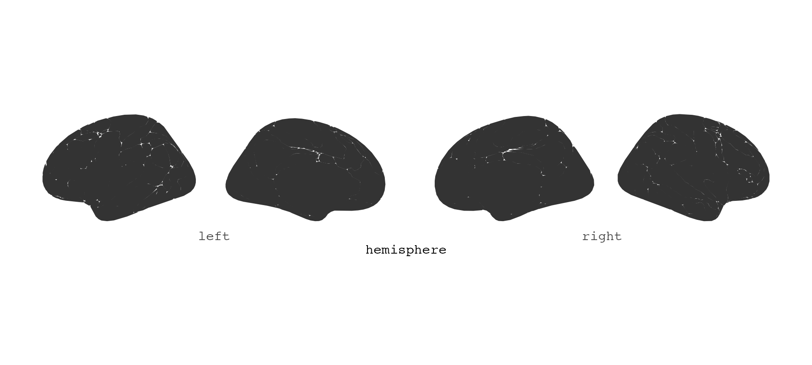
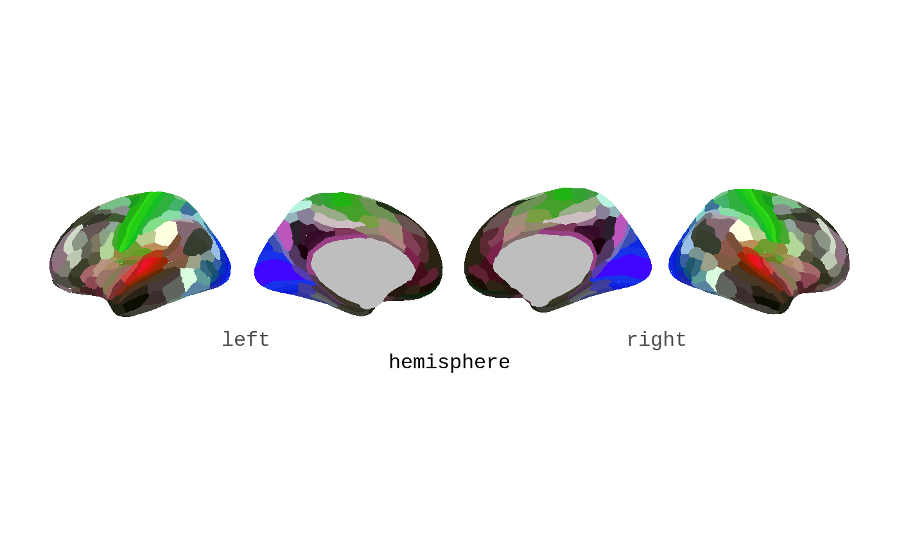
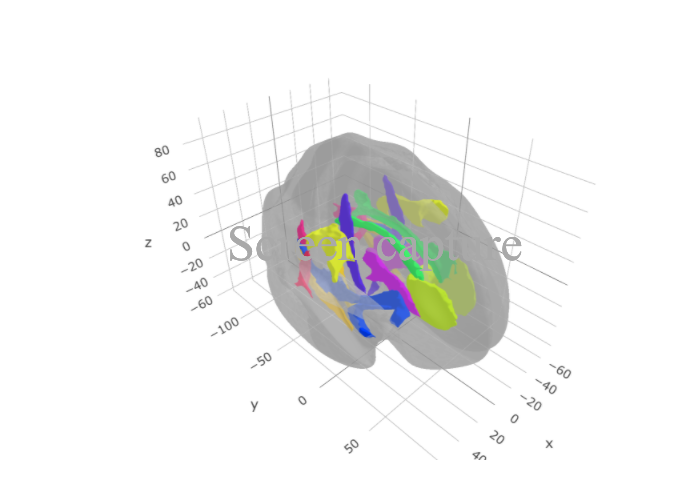
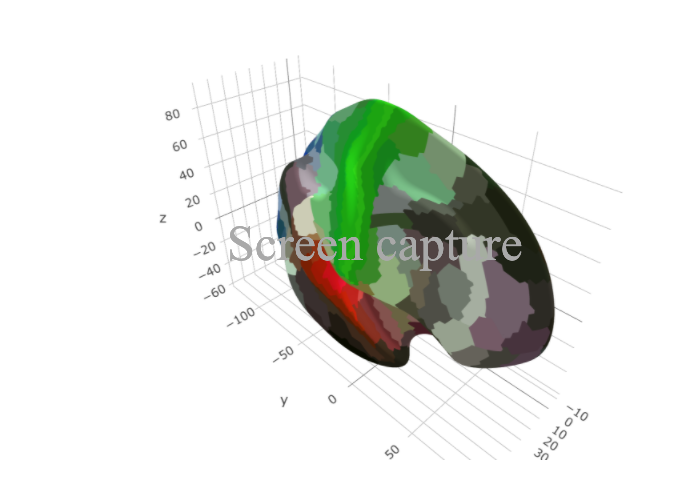

Using the ggseExtra package requires the two main ggseg-packages, containing the functions needed to plot the data. ggsegExtra is purely a repository of data-sets that fit with the functions in those main packages.
2d atlases with ggseg
You should be able to easily switch the atlases, after loading ggsegExtra, so rather plot one of the ggsegExtra atlases directly to the function.


If you want to make sure it looks properly like the atlas you are after, or you want to plot an example of the original plot. Most of the datasets also have corresponding palettes from the papers they were introduced from. These colour-scales can be applied through the scale_X_brain functions.

ggseg(atlas = glasser, show.legend = FALSE,
mapping=aes(fill = area)) +
scale_fill_brain("glasser", package="ggsegExtra")
3d plots with ggseg3d
The same goes for ggseg3d, the new atlases, now available through the ggsegExtra package, can be plotted with the ggseg3d function and its helpers.

